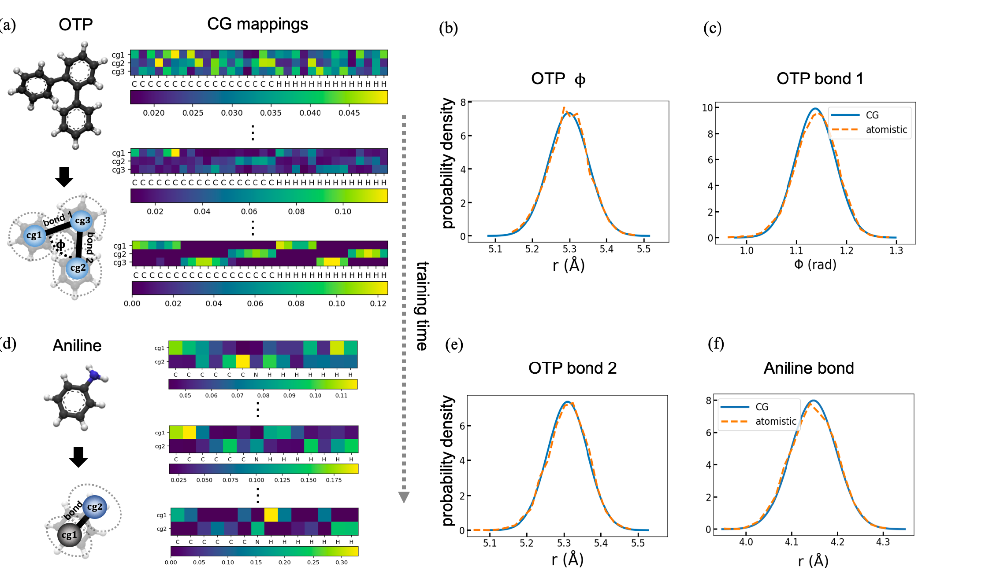

At the NIST Material Measurement Laboratory (MML), within the Materials Science and Engineering Division at the National Institute of Standards and Technology, I investigated structure–property–processing relationships in polymer systems intended for clinical and aerospace applications. As a brief summary of my research in the lab:
- I characterized anisotropic mechanical properties and surface binding kinetics of polymer combinations for clinical and extreme-environment use, including 3D-printed medical implants, biofabricated tissues, and aerospace soft-material systems. Conformer-ensemble analysis over candidate chain architectures was paired with statistical-mechanics priors to predict bulk-property distributions.
- I contributed to NIST testbeds tracking how polymers behave under 3D-printer laser melting and solidification, addressing micro-crack formation in additive manufacturing. I built coarse-grained representations via autoencoder-based dimensionality reduction so that simulation timescales could be extended to capture solidification dynamics inaccessible to all-atom MD.
- I integrated polymer chemistry with AI-driven materials-discovery workflows associated with the Materials Genome Initiative, using differentiable molecular dynamics and force-matching against ab initio data to parametrize energy functions for new polymer families. The pipeline closes the loop between hypothesis generation and experimental validation.
A preprint of this work will be made available shortly.
